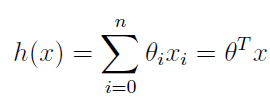
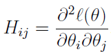
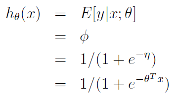
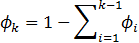
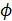
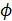

这篇文章在简单的介绍了一下什么监督学习什么是无监督学习之后，从线性回归问题开始，详细的讲解了什么是梯度下降算法，怎么样用矩阵的形式来求解线性回归算法的参数，并从概率论的角度通过引入高斯分布模型解释了为什么选择最小二乘函数作为线性回归的估计函数，对于不是全部样本能用一条直线拟合的情况下引入了局部回权回归算法，然后介绍了解决二项分类问题的逻辑回归算法，同样通过引入伯努利分布模型对逻辑回归算法给出了概率论的解释，解释了为什么逻辑回归算法采用sigmoid函数作为估计函数，并简单的介绍了感知器算法，讲解了比梯度上升算法收敛速度更快的牛顿算法，最后总结出了广义线性模型，当中介绍到指数分布族，广义线性模型构造的一般假设，给出了相对复杂的多项分类问题的解决算法Softmax回归算法。
引言
最近开始学习《机器学习》，学习的资料是斯坦福大学的《机器学习》公开课，授课的是Andrew Ng，在网易公开课上有翻译完整的全部视频。由于自己智力水平已经远不如十年前，加上一些先导课程比如微积分、线性代数、统计学和概率论都已经全部还给老师了，每一个视频要反反复复看好多遍，其中遇到不明白推导过程还需要去回顾相应的理论、定理或公式，所以学习的进展相对原先的计划来得缓慢许多。通过两个多星期的学习，总算是把第一部分基于线性回归和逻辑回归的内容学完了。我一直相信掌握知识的最好方法就是与他人分享，因为在与他人分享知识的同时又是对知识正分有效的巩固。所以下面就让我尝试着来说清楚这第一课的内容–机器学习之回归算法。
本文原则上适合所有对机器学习有兴趣的小伙伴们阅读，文章思路是跟上述公开课的讲义同步的，如果有高等数学、线性代数、统计学、概率论相关知识的读起来会更加轻松一些。
目录如下：
-监督学习
首先我们先大致的了解一下在机器学习中什么是监督学习什么是无监督学习。监督学习，指得是机器学习过程中使用的训练样本是事先分好类打好标签的，而无监督学习所使用的训练样本事先并没有打好标签，这里所谓的打标签的意思就是训练相本的输出结果是明确的。举个例子就容易懂了，比如我们人类小时候学习的时候，父母告诉你什么是苹果，什么是桔子，什么是狗，什么是猫，之后我们看到类似的物体就能够区分出来它是个什么，这就是监督学习，而人类的无监督学习例子也很多，比如我们会区分动植物(有时候也会有判断错误)，会区分各种各样的建筑物，再比如这个更具体的例子，给出以下几个图片，会自觉的发现其中的相似性。
以上区分监督与无监督学习的方法或许不是最严谨，但是应该是正确且容易理解的，网络上看到好多人用有没有训练样本或者用训练样本的多少来区分是不正确的，需要找关于这两种学习方法学术性的严格定义的朋友可以自行再百度一下，这里就不引用了。接下来在这篇文章里，我们介绍的算法都属于监督学习，也就是说给定的数据都是有预先定义好的标签的，主要用到的是两个例子，一个是房价的预测问题，还有个是垃圾邮件的判断问题，解决前者用的是线性回归算法，相应的解决后者用的是逻辑回归算法。
在进入我们的学习算法介绍之前，我们先以房价预测为例，把接下来会用到的一些数学符号做一个统一的定义。假设我们收集到的数据是这样的，有房子的面积和价格：

用点状图表示大致是如下的样子：
那么我们用表示一个输入，也可以叫作是特征，用表示输出，也叫作目标值，那么将 这样的组合叫作一个训练样本，叫作一个训练样本集，我们再用 和
和 表示输入和输出的域，显然，在我们的例子中，
表示输入和输出的域，显然，在我们的例子中， 和
和 都是实数，我们写作。因此我们的目标就可以这样描述，给定一个训练集合，我们需要找到一个合适的方法h，使得输入
都是实数，我们写作。因此我们的目标就可以这样描述，给定一个训练集合，我们需要找到一个合适的方法h，使得输入 ，输出，过程如下图：
，输出，过程如下图：
对于上面这个简单的房价例子，我们寻找的估计函数h是类似下图所示的红色直线，当需要对不在样本中的房子进行价格预测时，就可以如绿色直线标识的一样，由输入的面积x通过函数h来求得价格的值:y。
如果我们的需要输出结果是个连续的值，比如上面这样的房子的价格，那么我们称这样的问题是回归问题，如果我们需要输出的值是离散的几个值，比如输出是判断房子是公寓还是别墅，那么这样的问题我们称为分类问题。下面我们开始从回归问题谈起。
-线性回归
让我们把上面的房价预测例子的样本数据再稍微丰富一下，增加一个特征值，比如房子所在的楼层。
对于这样的样本，输入值x就是一个二维向量，那么表示的意思是第i个样本的面积，表示的意思是第i个样本的楼层。假设输入值y是基于输入特征x的线性函数，那么把我们的估计函数写成如下形式:
其中称作参数(或权值)，用来表示输入域和输出域 之间存在的具体映射关系，为了将这个公式写成简单的形式，我们令
之间存在的具体映射关系，为了将这个公式写成简单的形式，我们令 ，于是得到如下函数：
，于是得到如下函数：

函数最右边的 和都是向量(一个行向量的转置是个列向量，在数据项数量相同的情况下，一个列向量乘以一个行向量等于两个向量每一项乘积的和)，n是特征的数量(在上面房价预测例子中n=2)，而不是样本的数量。接下来我们需要解决的问题就是寻找合适的
和都是向量(一个行向量的转置是个列向量，在数据项数量相同的情况下，一个列向量乘以一个行向量等于两个向量每一项乘积的和)，n是特征的数量(在上面房价预测例子中n=2)，而不是样本的数量。接下来我们需要解决的问题就是寻找合适的 来使得所有样本通过执行函数h(x)之后的输出结果最接近实际值y，用函数表示就是对于第i个样本，我们需要让尽可能的等于，在这里我们引入下面这个评价函数
来使得所有样本通过执行函数h(x)之后的输出结果最接近实际值y，用函数表示就是对于第i个样本，我们需要让尽可能的等于，在这里我们引入下面这个评价函数 ：
：
使用如上评价函数的方法我们称之为最小二乖法，下面我们就接着来说怎么样选择可以使得评价函数 最小化。
最小化。
–梯度下降算法
假设我们站在一个山坡上，需要一步一步的走下山，有一个可行的方法就是环顾四周之后向梯度最陡的下方迈出一步，然后重复同样的方法，最终可以走到一个无法再往下走的地点，用同样的方法我们可以求出合适的 使得
使得 最小，具体做法是首先初始化
最小，具体做法是首先初始化 为任意值，然后重复地修正
为任意值，然后重复地修正 ，使得最终得出一个最小的
，使得最终得出一个最小的 ，每一次都使用如下方法对
，每一次都使用如下方法对 进行修正：
进行修正：
这样的修正对j从0到n的所有参数都要执行，其中称为学习速度，是一个手工设置的参数，相当于下山时每一步迈出的远近。为了进一步的计算出每一次的修正的具体数值，我们需要将公式 最右边偏导数求出来，以一个样本为例的求解过程如下：
最右边偏导数求出来，以一个样本为例的求解过程如下：
所以对于只有一个训练样本i的情况下 可以作如下修正，
可以作如下修正，
从公式可以看出，当h(x)计算出的实际值y越接近时，需要做的修正就越少，当h(x)计算结果起实际值y相差越大时修正就越多，这样子重复迭代多次后就可能得到了个h(x)最接近实际值y的 。延伸到有m个训练样本的情况，我们有两种做法可以对
。延伸到有m个训练样本的情况，我们有两种做法可以对 进行修正，一个叫作批量梯度下降法，做法是每一次修正的时候都遍历所有的训练样本，写成自然语言是如下算法：
进行修正，一个叫作批量梯度下降法，做法是每一次修正的时候都遍历所有的训练样本，写成自然语言是如下算法：
另一种方法叫作随机梯度下降法或叫增量梯度下降法，其做法是每遇到一个新的训练样本的时候就对 作一次调整，写成自然语言是类似下面的算法：
作一次调整，写成自然语言是类似下面的算法：
批量梯度算法最终可以收敛到一个 使得
使得 最小化，但是由于每次迭代都需要遍历所有的当样本，当数量m很大时，算法的效率会比较低下，而随机梯度下降算法最终得到的
最小化，但是由于每次迭代都需要遍历所有的当样本，当数量m很大时，算法的效率会比较低下，而随机梯度下降算法最终得到的 可以使得
可以使得 接近于最小化，或许会一直在最小
接近于最小化，或许会一直在最小 周围徘徊，但是当样本量m很大时，使用随机梯度下降算法是相对实用的。
周围徘徊，但是当样本量m很大时，使用随机梯度下降算法是相对实用的。
–线性回归的矩阵表达式
梯度下降算法给出了一种最小化 的方法，接下来我们来看另外一种不需要像梯度下降算法这样进行迭代的算法来最小化。我们直接可以对
的方法，接下来我们来看另外一种不需要像梯度下降算法这样进行迭代的算法来最小化。我们直接可以对 求关于
求关于 的导函数，然后使这个导函数为0即是
的导函数，然后使这个导函数为0即是 最小。在开始求导之前，我们先将训练样本通过矩阵的形式表示出来。输入的特征值x表示为：
最小。在开始求导之前，我们先将训练样本通过矩阵的形式表示出来。输入的特征值x表示为：
意思是有m个训练样本，每个样本有n个特征(如果考虑的话是n+1个特征)，矩阵的每一行表示的就是一个训练样本的所有特征值，需要注意 表示的是第一个样本的所有特征的列向量，写出来是如下形式：
表示的是第一个样本的所有特征的列向量，写出来是如下形式：
转置之后变成行向量，形式是：。
输出的目标值y表示为：
之前我们就已经定义过，那么这里我们可以得出：
对于一个向量z，我们有公式 ，所以进一步可以得出：
接着就可以对 求导，过程如下：
求导，过程如下：
其中用到的矩阵运算和求导的相关公式有：
第一步到第二步：
第二步到第三步：
第三步到第四步：
第四步到第五步：
在第五步代入公式时令:
(I 是单位矩阵)。
为了使 最小化，我们需要让其导数为0，即 ，则有：
最小化，我们需要让其导数为0，即 ，则有：
从而求得 ：
：
–线性回归的概率解释
通过以上的算法演示，我们会好奇为什么在梯度下降算法中的评价函数和矩阵运算最后求得的评价函数 都是最小二乘的形式呢？这一节就通过一系列概率假设来进行解释。首先让我们假设实际输出值和输出特征值满足以下公式：
都是最小二乘的形式呢？这一节就通过一系列概率假设来进行解释。首先让我们假设实际输出值和输出特征值满足以下公式：
其中 称为误差项，公式表示的意思通过我们的估计函数算出来的输出值，和训练样本集合中每一个对应样本的输出值之间存在的一定的差异，以房价预测为例，实际的房价偏离估计值可能是由于其它未列出特征值的原因，比如当天房东的心情，房子是否精装修等等，同时我们假设误差项是满足高斯分布的(也称正态分布)，那么我们用这样的表达式表示”“，的概率密度函数为(exp，以自然常数e为底的指数函数)：
称为误差项，公式表示的意思通过我们的估计函数算出来的输出值，和训练样本集合中每一个对应样本的输出值之间存在的一定的差异，以房价预测为例，实际的房价偏离估计值可能是由于其它未列出特征值的原因，比如当天房东的心情，房子是否精装修等等，同时我们假设误差项是满足高斯分布的(也称正态分布)，那么我们用这样的表达式表示”“，的概率密度函数为(exp，以自然常数e为底的指数函数)：
这意味着我们同样可以得到：
 表示的是
表示的是 基于给定的和参数
基于给定的和参数 时的分布。那么我们可以用表达式表示对于给定的输入矩阵X，和参数
时的分布。那么我们可以用表达式表示对于给定的输入矩阵X，和参数 ，输出向量会满足一个怎么样的分布，我们进一步把它定义为一个参数
，输出向量会满足一个怎么样的分布，我们进一步把它定义为一个参数 相关的函数，称之为似然函数，其形式如下：
相关的函数，称之为似然函数，其形式如下：
可以将向量展开成每一项的乘积：
那么对于给定的训练集体我们应该如何选择出最适合的参数 呢？根据最大似然率原则，我们只需要求得似然函数的最大值即可，通俗的理解就是选择参数
呢？根据最大似然率原则，我们只需要求得似然函数的最大值即可，通俗的理解就是选择参数 使得给定的输入可以最大概率的接近输出值。要使
使得给定的输入可以最大概率的接近输出值。要使 最大化，我们可以相入一个与其相关的严格递增函数，使得
最大化，我们可以相入一个与其相关的严格递增函数，使得 最大的时候就是
最大的时候就是 最大的时候，这里我们对取对数，与是得到如下演算：
最大的时候，这里我们对取对数，与是得到如下演算：
因此可以看出 最大化的求解过程就是以下式子最小化的求解过程：
最大化的求解过程就是以下式子最小化的求解过程：
而这个式子正是上文中我们的 ，另外可以发现，整个过程中和具体是多少无关，这个性质在后面推导广义线性模型的时候还会用到。
，另外可以发现，整个过程中和具体是多少无关，这个性质在后面推导广义线性模型的时候还会用到。
–局部加权回归算法
有些时候一条单一的直线并不能很好的拟合我们的训练集合。如下图所示，最左边的图就没有中间的拟合的好。而有时候得到的函数如果可以覆盖所有的点，那么这样的估计函数只是能表现现有训练样本的特性，而并不一定能够具有普遍意义，如最右边的图。
我们通常把最左边这样的情况称为欠拟合，而最右边的这种情况称为过拟合。我们再看如下图的样本数据：
如果我们对所有样本运用线性回归算法，或许会得到红色直线所示的估计函数，然而，这并不能很好的拟合我们的训练样本，而如果我们根据一部分训练样本数据进行线性回归，可能可以得到绿色直线所示的估计函数，这样会得到更好的拟合，我们把这样的算法叫作局部加权回归算法。在普通线性回归算法中，我们做的是寻找合适的 ，使得如下表达式最小：
，使得如下表达式最小：
而在局部加权回归算法中，我们需要寻找合适的 ，使得下面这个表达式最小：
，使得下面这个表达式最小：
其中 称为权重函数，直观的看当取值很大时，我们需要更好的选择
称为权重函数，直观的看当取值很大时，我们需要更好的选择 才能使得整个式子的结果很小，而当
才能使得整个式子的结果很小，而当 很小时，估值与实际结果的差异又可以忽略不计，当一般情况下我们选择使用如下函数来表示权重：
很小时，估值与实际结果的差异又可以忽略不计，当一般情况下我们选择使用如下函数来表示权重：
可以看出，距离当前x较远的值，权重会相对小一些，对于距离当前x较近的值权重会大一些，所以对于特定的输入值x，在选择 的时候，距离输入样本x越近的值会被赋予更高的权重。其中分母中的
的时候，距离输入样本x越近的值会被赋予更高的权重。其中分母中的 表示的是波长，用来控制距离x远近变化时权重变化的快慢。
表示的是波长，用来控制距离x远近变化时权重变化的快慢。
局部加权回归是一个非参数化的算法，而普通线性回归是一个参数化的算法。参数化的算法表达的意思是一旦我们得到了我们的估计函数h之后，原有的训练样本可以不需要保留了，对于新的输入我们用固定好的参数 就可以计算出输入目标值，而非参数化的算法则需要一直保留训练样本，在给定输入值的时候需要重新计算参数来得到更适合的估计函数。
就可以计算出输入目标值，而非参数化的算法则需要一直保留训练样本，在给定输入值的时候需要重新计算参数来得到更适合的估计函数。
-逻辑回归
下面我们讨论分类问题，它有点类似回归问题，只不过最终输出的结果y不是一个连续的值，而是系列离散的值，比如二元分类问题中，y就只有0或1两个输出结果，例如垃圾邮件识别的算法就是这样一个分类算法，可以认为正常邮件为1，垃圾邮件为0。当然我们也可以用上面所说的线性回归算法来解决这样的分类问题，但是对于这样的分类问题应用线性回归算法效果很差，而且由于y非0即1，对于h(x)计算结果大于1或小于0就没有任何的意思。因此，我们引入逻辑函数或称为sigmoid函数来作为我们的估计函数，用来替代线性回归中的线性函数，其形式如下：
函数的图形如下图：
当z很大时，函数接近于1，当z很小时函数接近于0。这个函数还有一个很漂亮的特性，就是它的导数可以简单的表示成它自己的形式：
所以在逻辑回归问题中我们的估计函数可以表示为：
–逻辑回归及其概率解释
那么对于上述给定的的逻辑回归模型，我们要怎么样才能寻找到合适的参数 呢？接着我们来做一些概率假设，然后得到似然函数，最后通过使得似然函数最大化来求得我们最合适的
呢？接着我们来做一些概率假设，然后得到似然函数，最后通过使得似然函数最大化来求得我们最合适的 。
。
假设y-1的概率为h(x)，那么由于y非0即1，那么y=0的概率就是1-h(x)，正式表达式如下：
可以简洁的表示成：
于是我们可以进一步得到我们的似然函数：
和上面线性回归的演算一样，我们对这个函数求对数：
所以接下来的问题就是要如何使的函数 最大化，同样的我们可以采用梯度上升算法：
最大化，同样的我们可以采用梯度上升算法：
第一步也是针对一个训练样本的情况将最右边的偏导数求解出来：
因此我们就可以通过重复的迭代来求得合适的 ：
：
形式上和线性回归中所用的梯度下降算法的类似，但是这里最大的区别是h(x)已经不是一个线性的函数了。
–感知器算法
让我们对上述的逻辑回归算法做一个小修改，将函数g(z)定义为以下非0即1的情况：
然后用同样的方法迭代修正 ：
：

这样就得到了感知器算法。虽然形式上感知器算法看上去和线性回归及逻辑回归很相似，但它和这两个算法有很大的不同，尤其是很难赋予感知器算法有意义的概率解释或给感知器算法寻找一个最大似然函数。
–牛顿算法
我们来看另外一个方法可以使得上述逻辑回归中的似然函数 最大化–牛顿算法。牛顿算法的作用是为一个函数寻找到x使得f(x)=0，他的求解过程如下图：
最大化–牛顿算法。牛顿算法的作用是为一个函数寻找到x使得f(x)=0，他的求解过程如下图：
先任选一个x和f(x)值，之后找到这个点的切线，切线和x轴相交的点作为第二次的x值，然后重复之前的动作，直到最后找到的x值会等于或无限接近那个使f(x)=0的值。由于切线的斜率就是这个点的导数，所以我们可以得到如下表达式：
所以对于我们的似然函数，我们求得其最大化，那么就是要求其导数为0的值，也就是求，那么套用牛顿算法，我们需要做的就是：
考虑到实际逻辑回归的例子中参数 是一个向量，所以我们的表达式延伸为：
是一个向量，所以我们的表达式延伸为：
其中H 称为Hessian，它是一个n*n的矩阵：

牛顿算法的收敛速度比梯度上升要快很多，求得合适的参数 时迭代的次数更少，但是牛顿算法每一次迭代的复杂度要大于梯度上升，因为它每次都需要对一个n*n的矩阵求逆，所以当n不是特别在的时候牛顿算法有很好的效率。
时迭代的次数更少，但是牛顿算法每一次迭代的复杂度要大于梯度上升，因为它每次都需要对一个n*n的矩阵求逆，所以当n不是特别在的时候牛顿算法有很好的效率。
-广义线性模型
到目前为止我们已经了解了两种例子，一个是线性回归，一个是逻辑回归(可以解决分类问题)。在线性回归中，我们有用到高斯分布 ，在逻辑回归中，我们有用到伯努利分布
，在逻辑回归中，我们有用到伯努利分布 ，其实这两种方式都是一种更普遍的模型的特例，这个模型叫广义线性模型。
，其实这两种方式都是一种更普遍的模型的特例，这个模型叫广义线性模型。
–指数分布族
让我们从指数分布族开始谈起，直接来看一看指数分布族的表达式：
其中称为特征参数； 是充分统计函数，而且经常就等于y；是对数配分函数，
是充分统计函数，而且经常就等于y；是对数配分函数， 原则上是个常量；所以选定了函数b,a和T就定义了一个以
原则上是个常量；所以选定了函数b,a和T就定义了一个以 为参数的分布族，当我们改变的时候就能改变分布方式，下面我们展示伯努力分布和高斯分布写成上述形式的表达式。
为参数的分布族，当我们改变的时候就能改变分布方式，下面我们展示伯努力分布和高斯分布写成上述形式的表达式。
伯努利分布：
其中，可以求得，于是我们就有如下函数b,a和T:
高斯分布(之前已经提到过实际结果与无关，所以可以写成如下表达式)：
我们得到如下函数a,b和T:
今后我们还会看到很多分布都是指数分布族的一员。
–广义线性模型构造
通常性情况下，对于线性回归和逻辑回归问题，我们根据给定的输入值x来预测出一个变量y的值，为了得到更广义的线性模型，我们可以作如下三点关于y基于给定x值的条件分布假设：
(1) ，给定x和 ，y满足基于参数
，y满足基于参数 的指数分布。
的指数分布。
(2) 给定输入值x，我们的目标是找到一个合适的T(y)函数，在大多数情况下T(y)=y，所以我们就希望我们的估计函数h(x)输出的值尽可能的接近y在给定x时候的值班，表达式为。
(3) 参数和输入值x线性相关，如果是向量的话，写作。
关于第三点假设，只是选择这样的模型设计，因为我们是要求得一个广义的线性模型。通过以上三点假设，我们可以比较容易的得出一个漂亮的广义线性模型GLMs。下面我们就简单的看一下普通的线性回归和逻辑回归是如何从广义线性模型衍生出来的。
线性回归中，我们对于给定的输入值x(自变量)得到的目标值y(应变量)是连续的，因而我们采用的是高斯分布模型!，通过上述的指数分布族的演算过程中，我们发现，于是我们得到：
逻辑回归中，我们解决的是二元分类问题，所以我们采用的是伯努利分布模型 ，同样通过上述的指数分布的演算过程，我们有
，同样通过上述的指数分布的演算过程，我们有 ，于是我们得到：
，于是我们得到：

这就正好解释了为什么我们在逻辑回归算法中使用sigmoid函数作为估计函数。
–softmax回归
最后我们再来学习一个广义线性模型的例子，之前的逻辑分类中，我们的输出目标值y只能是0或1两个选择，例如我们的垃圾邮件识别问题，而现在我们讨论的输出y有1到k种可能，例如我们的邮箱自动分类器，可以根据邮件内容自动将邮件归档到相应的k种分类之下 ，我们称这样的问题为多项分布问题。我们用来表示输出结果落在每种类别的概率，实际上这样的表达是有一定的冗余的，因为对于第k个值等于1减去之前所有值之和，为了将这样的多项分布用指数分布族的形式表达出来，我们定义T(y)是一个含有k-1项的向量，具体形式如下：
我们再定义如下指示函数：
例如 ，因此我们就可以将T(y)简写成这样子：，含义是第i个向量的第i项正好为1。于是我们进行如下演算来得到指数分布族中的a,b和T函数。
其中：
由此我们可以得到：
，
进一步求得对应的函数：
得到：
这个将 映射到的函数叫作Softmax函数。接着我们将构造一般线性模型的三个假设代入公式，得到：
映射到的函数叫作Softmax函数。接着我们将构造一般线性模型的三个假设代入公式，得到：
这个可以用来解决多项分布问题的算法我们称之为Softmax回归，可以发现逻辑回归是其的一个特例。这个算法的估计函数可以写成：
为了求得合适的参数 ，我们可以对以下的对数似然函数应用梯度上升算法或牛顿算法求它的最大似然性。
，我们可以对以下的对数似然函数应用梯度上升算法或牛顿算法求它的最大似然性。
总结
到此我们机器学习第一课的内容就学习完了，这篇文章在简单的介绍了一下什么监督学习什么是无监督学习之后，从线性回归问题开始，详细的讲解了什么是梯度下降算法，怎么样用矩阵的形式来求解线性回归算法的参数，并从概率论的角度通过引入高斯分布模型解释了为什么选择最小二乘函数作为线性回归的估计函数，对于不是全部样本能用一条直线拟合的情况下引入了局部回权回归算法，然后介绍了解决二项分类问题的逻辑回归算法，同样通过引入伯努利分布模型对逻辑回归算法给出了概率论的解释，解释了为什么逻辑回归算法采用sigmoid函数作为估计函数，并简单的介绍了感知器算法，讲解了比梯度上升算法收敛速度更快的牛顿算法，最后总结出了广义线性模型，当中介绍到指数分布族，广义线性模型构造的一般假设，给出了相对复杂的多项分类问题的解决算法Softmax回归算法。整个过程中需要有一定的高等数学，概率论和线性代数基础才能充分的了解当中的一些公式的推导步骤，在学习这些算法的过程中，我自己也正好回顾了一些这些数学方面的基本知识，今后有空的话也会写一点学习笔记和心得发布出来。而实际应用中，并不一定非要弄清楚算法背后的推导过程，需要知道解决什么样的问题应用什么样的算法，和这些算法如何使用就可以了。